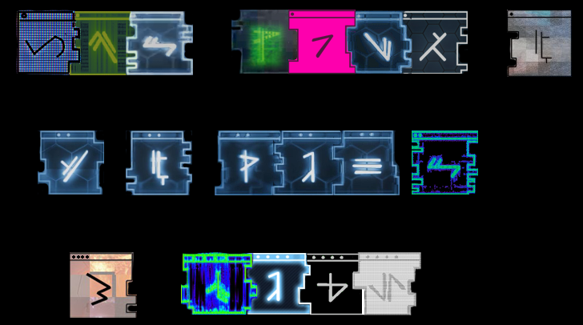

/START FILE/
/CLASSIFIED/NOTICE TO ALL SECTION 3 OPERATIVES/
//
/THE LATEST REQUIEM SURFACE INTEL TRANSMITTED BY 117, SUGGESTS THE EXISTENCE OF TERMINALS WHICH MAY ALLOW ACCESS TO NEW DOMAIN DATA ARCHIVES./
//
/RECOVERED DATA WILL BA ACCESSIBLE BY ALL SPARTAN-IV PERSONNEL, FROM THEIR SERVICE RECORD/CAMPAIGN SECTION./
//
/PLEASE NOTE THAT UNLIKE THE ALPHA HALO TERMINALS, THESE WILL NOT REQUIRE CODE SEQUENCES TO RETRIEVE. IT IS ONLY NECESSARY THAT A SURFACE ASSET ACCESS THE TERMINALS, IN ORDER FOR THE TRANSMISSION TO BEGIN./
//
/END OF FILE/
Eleventh Hour
PLNB PRIORITY TRANSMISSION [CLASSIFIED]
ENCRYPTION CODE: [CLASSIFIED]
PUBLIC KEY: N/A
FROM: CODENAME SURGEON
TO: CODENAME COALMINER
CLASSIFICATION: ELEVENTH HOUR [1/5]
SUBJECT: AFTERMATH
/FILE EXTRACTION-RECONSTITUTION COMPLETE/
/START FILE/
Decades from now, when historians evaluate the war, what will they say about us? Will they claim that our victory was ultimately fruitless? That it failed to secure a lasting peace, or worse, that it was only a prelude to far greater horrors that now lay ahead?
My hope – OUR HOPE – is that history would instead view this war as a catalyst. That the last thirty years were a crucible, a threshing floor for our species, sifting out our fears and frailties. And that ultimately it made us stronger and more vigilant in the end, fully prepared for whatever will come next. After all, what good is struggle if there is no change? What good is a fire if the sword is not made stronger?
Attached are four reports accounting the major contingency structures our species currently faces in the wake of the war. Please evaluate them closely. Their outcomes will dictate how history views us, or if history even views us at all.
Xenomorphic element [2/5]
Martial element [3/5]
Provenancial element [4/5]
Primogeniture element [5/5]
As Machiavelli once said: “the Romans, foreseeing troubles, dealt with them at once, and, even to avoid a war, would not let them come to a head, for they knew that war is not to be avoided, but is only put off to the advantage of others.”
Likewise, we must deal with these issues head-on, without fear and without hesitation. We can afford no other stance.
/END FILE/
PLNB PRIORITY TRANSMISSION [CLASSIFIED]
ENCRYPTION CODE: [CLASSIFIED]
PUBLIC KEY: N/A
FROM: CODENAME SURGEON
TO: CODENAME COALMINER
CLASSIFICATION: ELEVENTH HOUR [2/5]
SUBJECT: OVER THE FENCE
/FILE EXTRACTION-RECONSTITUTION COMPLETE/
/START FILE/
SPECIES CANDIDATE//LINE RECORD 94:73:02:75
UNGGOY// Sensors at Balaho indicate stability, no off-planet transport recorded since Solipsis. Runners are claiming that Buwan has been abandoned as well, but we’re keeping our eyes on it anyway. Moderate Unggoy populations have been observed in Sangheilian systems at various intervals.
KIG-YAR// Eayn’s native population continues to grow and expand within reasonable governing parameters; its economic and social lines have stabilized in the wake of the war. Muloqt, Kaelarot, and Valyanop, the primary interplanetary colonial sites, all remain static, with little notable movement. There are rumors of mercenaries operating alongside a handful of more conservative Sangheili states, although that has yet to be substantiated.
SANGHEILI// Most intel here originates from ground contacts, but sensors have assisted with validation. The primary issue with the Sangheili is that of discordant cultural symmetry. It is difficult to assess military growth across several dozen active colonial vectors all with disparate political structures. Nevertheless, any and all visible military activity appears to be internecine in nature.
NOTE: A cluster of Sangheili frontier worlds saw a sudden and anomalous convergence of unregistered ships, largely cruisers of varying classes according to a handful of remote relays stationed nearby. By the time sensors were deployed, the ships were gone. The relays can’t assess numbers or strength, but the readings we have indicate that this wasn’t an expeditionary voyage or something tied to a single state. It appears to have been much larger.
/END FILE/
PLNB PRIORITY TRANSMISSION [CLASSIFIED]
ENCRYPTION CODE: [CLASSIFIED]
PUBLIC KEY: N/A
FROM: CODENAME SURGEON
TO: CODENAME COALMINER
CLASSIFICATION: ELEVENTH HOUR [3/5]
SUBJECT: THE NEW SOLDIER
/FILE EXTRACTION-RECONSTITUTION COMPLETE/
/START FILE/
Realistically, the pervasiveness of the modern soldier will never be on the decline, at least not in our time. But ubiquity and numbers don’t always guarantee operational success, something Naval Intelligence recognized long ago. Rather than drown out our enemies in an avalanche of bodies, we saw the value intrinsic in the specialization and refinement of a very select number of soldiers - a remarkably select number, actually.
This is how the Spartan branch came to be.
By reverting back to ORION protocols, the sins of the previous administrations have been averted this time around. Unlike SPARTAN-II and SPARTAN-III, which will likely face severe ethical scrutiny in the years to come, the SPARTAN-IV project was centered on properly screened recruits, both career military veterans and young soldiers who showed significant promise. After passing a rigorous series of tests, admission to the program was a matter of discretion, not compulsion.
From a psychological perspective, the coalescent solidarity of these men and women has been nothing short of astonishing, particularly over a relatively short period of time. Many have even adopted some of the colloquial pejoratives used by S-II operatives years ago [i.e. ‘alpha bravo’ (‘alien bastard’)]. Behavioral shifts like these have and will continue to differentiate S-IVs from the others who serve alongside them. It clearly suggests that the Spartan branch has rapidly and unapologetically become its own thing... almost overnight.
But what value is a warrior without a war? What good is weapon without a threat to give it purpose? You know as well as I that these are the very questions that were asked just before the beginning of the last civil conflict we faced and these are the same questions that are being asked now - asked by those who feel they have the most to lose.
/END FILE/
PLNB PRIORITY TRANSMISSION [CLASSIFIED]
ENCRYPTION CODE: [CLASSIFIED]
PUBLIC KEY: N/A
FROM: CODENAME SURGEON
TO: CODENAME COALMINER
CLASSIFICATION: ELEVENTH HOUR [4/5]
SUBJECT: PROVENANCE
/FILE EXTRACTION-RECONSTITUTION COMPLETE/
/START FILE/
We dispatched an isolation contact group [L3-08] to the site. Upon entering the debris field, the group was immediately pinged by a non-standard, heterogenic signal emanating from the structure’s surface – or, at least, what remained of it after the event.
Following protocol, the contact group released probes [839] into the debris field. Once it was deemed secure by composite scans conducted over the course of 3.7 days, UNSC RUBICON was deployed from Luna. Aboard were a number of high-risk, remote contact teams [RCT] outfitted for deployment to the construct’s surface.
Without the installation’s artificial sun operating at full capacity, navigating the debris field for insertion was difficult – navigating the installation’s surface itself was even more difficult. The damage was... traumatic.
Habitability sustainment systems were still active in some locations, but were operating intermittently and in a state of disrepair – a factor that generated extremely volatile weather conditions. Some indigenous [if it can be called that] fauna may have survived the event, but RCTs were strictly advised to avoid all potentially hostile life forms.
After 8.4 days, all contact with RCTs was severed. Only one [RCT- 06] returned, suffering extensive casualties. They brought back a severely damaged armature, which appeared to be the original source of the signal. Initially, there was a strong suspicion of this armature’s origin, but local science teams undertook an aggressive node cultivation process to withdraw data from the device and determine, with veracity, its actual origin.
All communications with the UNSC RUBICON halted within 48 hours of their last notice. Search and rescue teams have been deployed to the site, but have reported no findings yet.
/END FILE/